🍰
decoração com balões · Belo Horizonte e região
Na Celebrar acreditamos que toda data merece ser lembrada com muito carinho!
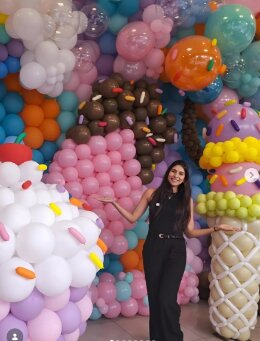
quem faz acontecersobre a celebrar
Cada projeto começa com uma pergunta simples: qual é o tema que essa pessoa está celebrando? A partir daí, escolhemos paleta, formatos e texturas de balão para montar um cenário que combina com a data — seja uma Festa Junina cheia de cor, um quarto de bebê em tons pastel ou uma comemoração da seleção brasileira.
Trabalhamos com balões biodegradáveis, arcos orgânicos, painéis personalizados e móveis de apoio (cilindros e mesas), sempre montados no local no dia do evento.
o que fazemos
Toda decoração é iniciada através de um projeto, onde você consegue visualizar como ficará a decoração final! Cada detalhe é importante para a realização do seu sonho!
trabalhos recentes
Cada imagem é uma festa real, montada do zero — clique para ver o tema de cada uma.
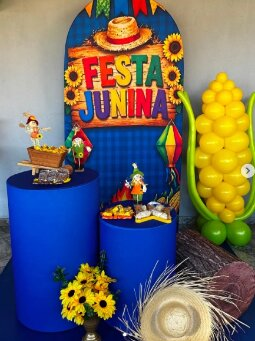
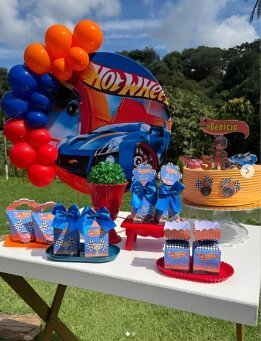
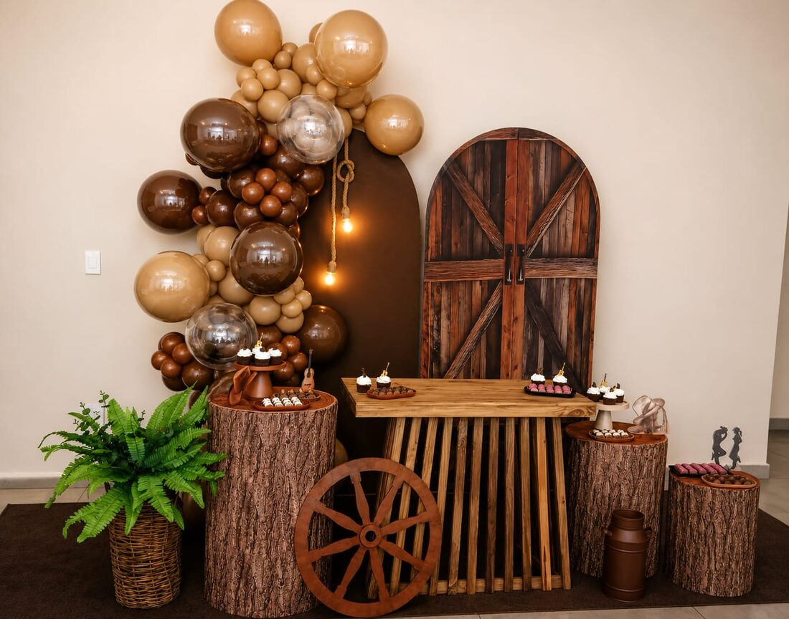
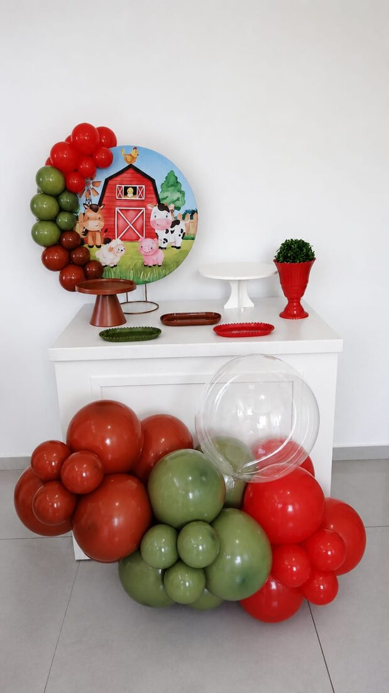
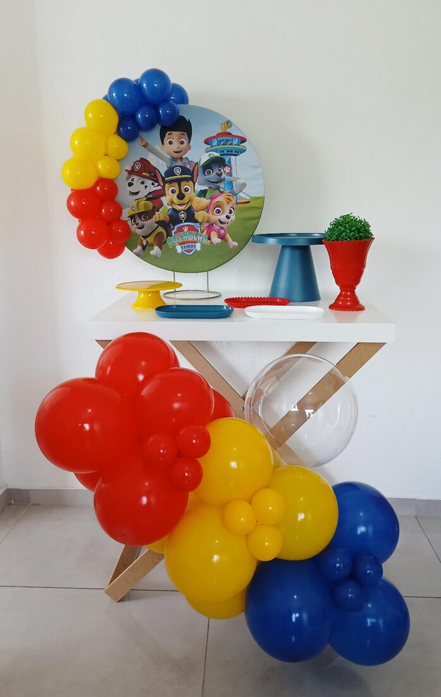
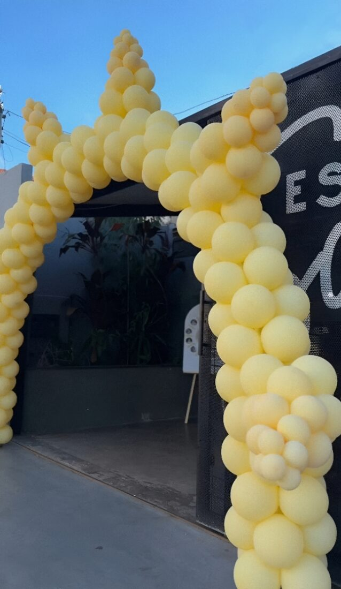
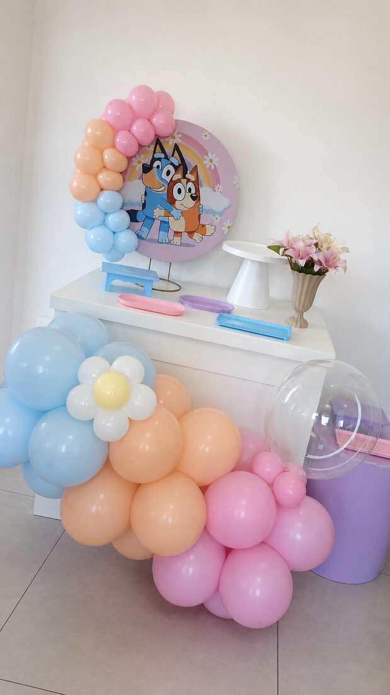
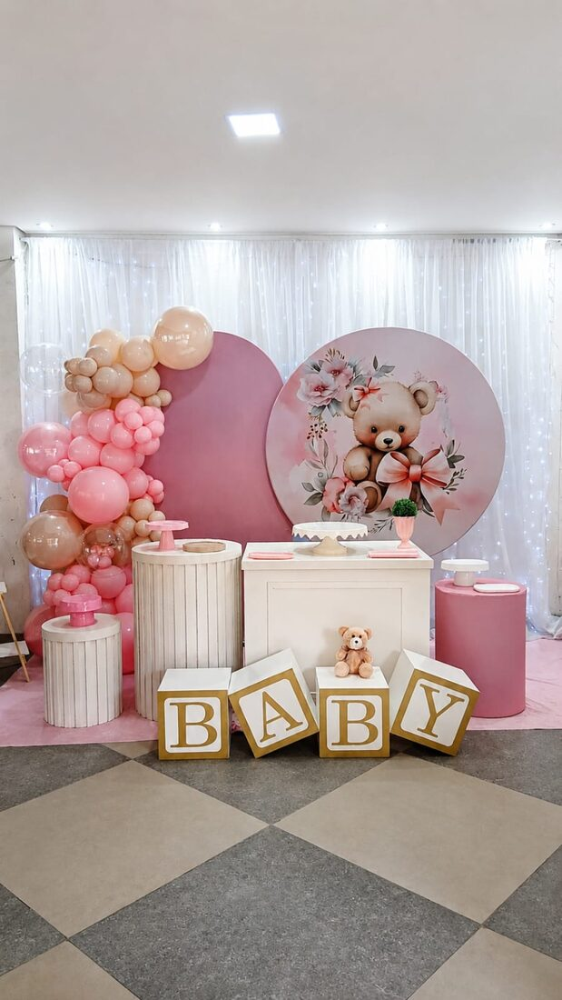
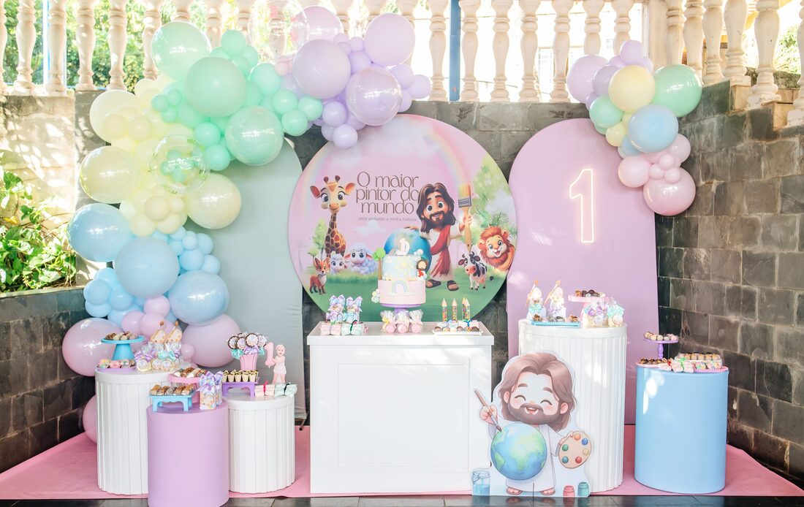
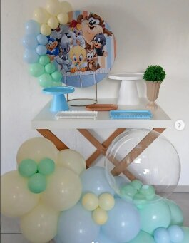
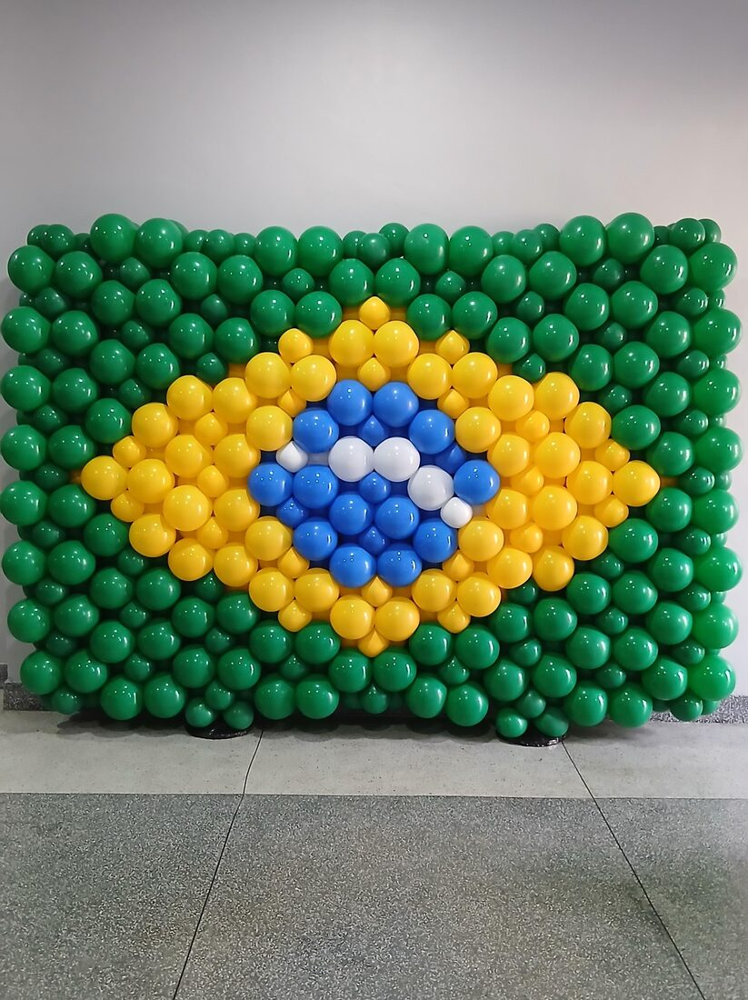
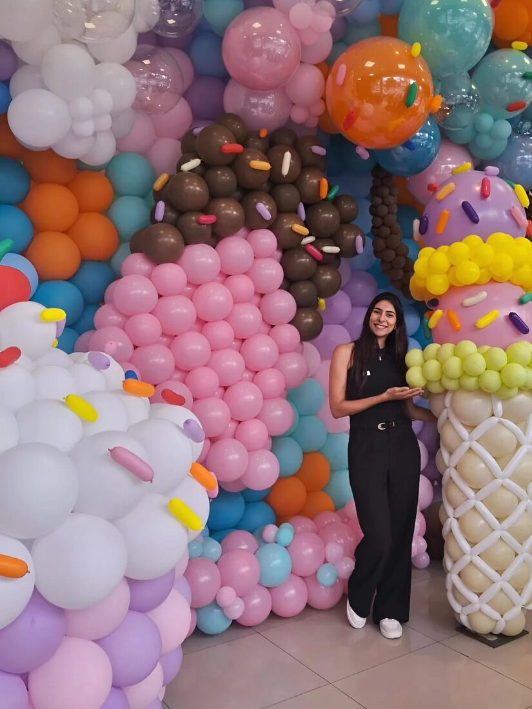
“Cada balão tem um papel na composição — a gente pensa na paleta antes de pensar
na quantidade.”
vamos combinar sua festa?
Preencha o formulário com o tema e a data do seu evento, ou fale direto pelo WhatsApp — respondemos rapidinho.